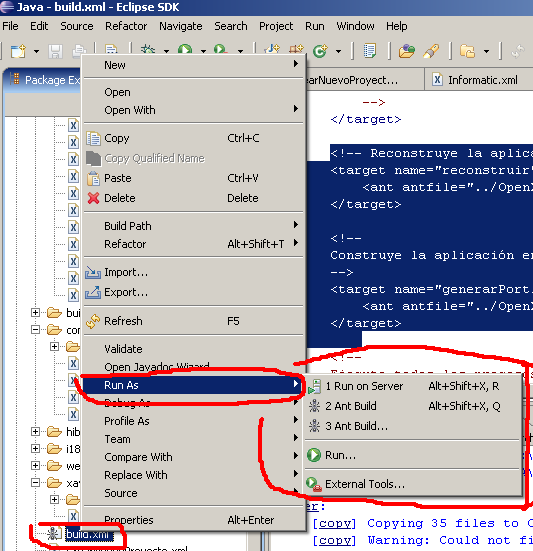
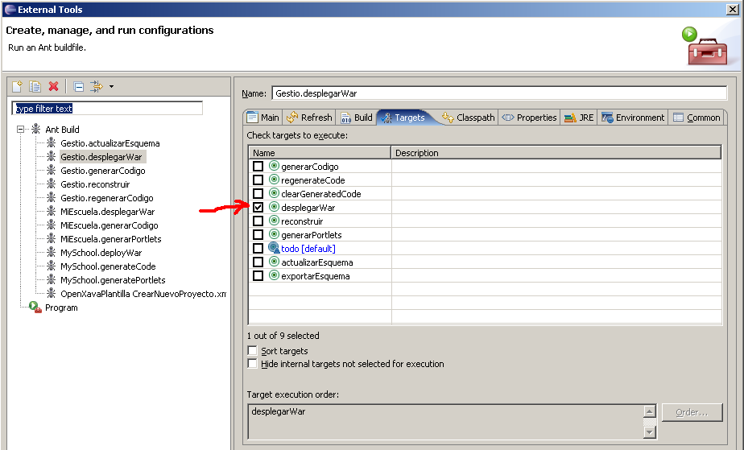

Executing Ant tasks from Eclipse
You should install previously Java JDK, and created the environment variable JAVA_HOME.
Up till now, one of the best things aspects of Eclipse is that it is installed completely in a folder.
Another important aspect is:
File build.xml
This is a file that has some tasks to run with Apache Ant. These tasks are commonly:
- generateCode: Makes code generation for the first time.
- regenerateCode: Makes code generation after any changes are made. This tasks replace all code generated previously.
- updateSchema: In order to create or alter tables form the data base.
- deployWar: In order to put all necessary files available for the application server and run our applications.
- rebuild: To rebuild our code.
- generatePortlets: So that application can be run in a portal (like Liferay, Stringbeans..)
- all: It makes some of the tasks defined in the file build.xml. It is the default task.
Running the default task from the file build.xml
Placing the mouse icon over our file build.xml from our project and clicking the right button we select Run As – 2 AntBuild, then our default task (in the build.xml) will be executed.
Selecting and Running a task from the file build.xml
Placing the mouse icon over our file build.xml from our project and clicking the right button we select Run As – 3 AntBuild …, notice the 3 dots (…)! , and then select the task to run from the file build.xmlDefining "External Tools".
Once the tasks are defined they can be executes easily. For that, we choose the symbol: that is placed either in the top of the screen of the Eclipse and when executing Run As.We should create a new task with the symbol on the upper left masked as 1 . We should verify we are in the Main tab as we mark with 2. We verify too that the file build.xml if form our project!. and that the name we give to the task is the correct.
Now lets go to the Targets tab.

Now we select the Ant task we want and unselect the rest of undesired tasks. As we can see some of the task names are in Spanish but are very similar in English. The task "todo" (in English "all") is the default.

And finally we go to the Refresh tab and verify that the option the entire workspace is selected.
Running previously defined tasks.
Once we have defined the tasks, they can be easily executed. We choose the symbol: (we can choose for instance the one on the top of the screen). If we see our tasks (for instance the one that is in the 4th place 4 Gestio.regenerarCodigo) then we select it. If it is not visible then we should go to external tools and look for it in order to run it.